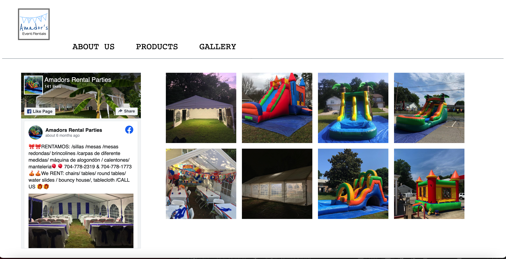

Julio Paniagua
Projects
An online ordering application for a local Mexican bakery.
Ongoing Experience:
Wag App

Designed & developed a Native Android application that helps users find/adopt a pet from a local shelter and keep track of their pet’s health.
Experience:
- Native Android Development.
- Coding in Java & Kotlin using Android Studio IDE.
- Using version control to commit, push, and pull requests.
- Agile.
- Object Oriented Programming(OOP).
- Claiming & assigning user stories.
Amadors Party Rentals
Designed and developed a website for a local small business.
Experience:
- Designing and coding a user-friendly business website
- Coding in HTML5, CSS, & JavaScript using Visual Studio Code IDE
- Working with FireBase web hosting services & Google Domains.
Gym Membership System

Designed & developed a console-based application that helps keep track of gym members, payments, membership enrollments, and membership status.
Experience:
- Back-end programing.
- Creating & designing set of classes.
- Object Oriented Programming(OOP).
- Coding in Java using NetBeans IDE.
Designed & developed a Windows Form application that made it easier for a catering business to manage customer orders.
Experience:
- Designing GUI in Windows Form
- .NET application; Object Oriented Programming.
- Coding back-end in C# using Visual Studio IDE.